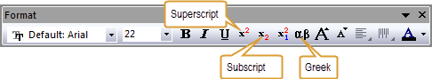
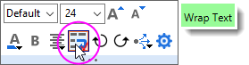
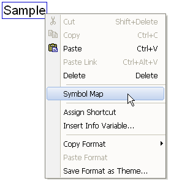
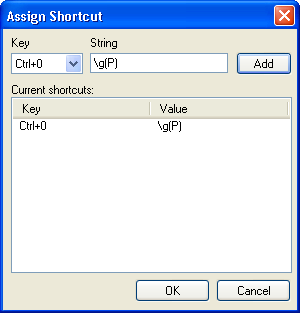

Textbeschriftungen erstellen
Create-TextLabel
Die einfachste Methode zum Hinzufügen von Textbeschriftungen in Ihren Origin-Fenstern ist die Verwendung von Origins WYSIWYG-Hilfsmittel zur Texterstellung und -bearbeitung:
- Verwenden Sie das Hilfsmittel Text der Symbolleiste Hilfsmittel, um Ihre Beschriftungen zu erstellen.
- Verwenden Sie die Symbolleisten Format und Stil, die Minisymbolleisten und den Dialog Eigenschaften des Textobjekts, um die Format- und Stiloptionen festzulegen, die Objekte mit LabTalk-Variablen und Skripts zu verknüpfen, Anhängungsmethode und Position des Objekts zu steuern etc.
- Verwenden Sie die Abbildung Symbole -- durch Rechtsklick im direkten Bearbeitungsmodus verfügbar -- um Ihren Beschriftungen Sonderzeichen hinzuzufügen.
- Verwenden Sie Infovariable einfügen -- verfügbar durch Rechtsklick im internen Bearbeitungsmodus – , um Metadaten und Spaltenbeschriftungen zu Ihrer Beschriftung hinzuzufügen.
Eine Beschriftung erstellen und benutzerdefiniert anpassen
- Klicken Sie auf die Schaltfläche Text-Hilfsmittel
 .
.
- Klicken Sie auf die Stelle in Ihrem Origin-Fenster (Grafik, Arbeitsblatt etc.), an der Sie den Text einfügen möchten.
oder
- Klicken Sie mit der rechten Maustaste auf die gewünschte Stelle in Ihrem Origin-Fenster.
- Wählen Sie im Kontextmenü Text hinzufügen.
Geben Sie Ihren Text ein und passen Sie ihn mit Hilfe einer Kombination des Folgenden benutzerdefiniert an:
- Wählen Sie Ihre Optionen mit Hilfe der Schaltfläche auf den Symbolleisten Format und Stil.
- 
- Wenn ein Textobjekt ausgewählt ist, können Sie die Schaltflächen auf der Minisymbolleiste des Objekts (z. B. Ausrichtung des Texts) verwenden.

- Um den Textumbruch ein- und auszuschalten, klicken Sie auf Textumbruch auf der Minisymbolleiste des Objekts; oder aktivieren Sie das Kontrollkästchen Textumbruch, Höhe anpassen auf der Registerkarte Rahmen im Dialog Eigenschaften (siehe nächsten Punkt).
- 
- Um auf alle Textobjekteigenschaften zugreifen zu können, klicken Sie mit der rechten Maustaste auf das Objekt und wählen Sie Eigenschaften.
|
Hinweis: Wenn Sie Textbeschriftungen erstellen, wird, wenn Sie in den Layerrahmen geklickt udn Ihre Textbeschriftung erstellt haben, diese Beschriftung automatisch mit dem Rahmen verbunden (siehe auch Objektverbindung und Skalierung). Wenn Textbeschriftungen mit dem Layerrahmen verbunden sind, werden diese beim Verschieben und Vergrößern/Verkleinern des Layers ebenfalls entsprechend verschoben oder vergrößert/verkleinert. Wenn Sie außerhalb des Layers klicken und eine Textbeschriftung erstellen, wird die Beschriftung automatisch mit der Seite verbunden, in der die Beschriftung nicht mit dem Layer verschoben, vergrößert oder verkleinert werden kann.
|
Tastenkombinationen für die allgemeine Bearbeitung von Textbeschriftungen
Wenn Sie es vorziehen, Tastenkombinationen statt der Schaltflächen in den Symbolleisten zu verwenden, können Sie folgende Tastenkombinationen verwenden:
| Bedienelement |
Tastenkombination |
| Fett |
STRG + B, STRG + UMSCHALT + B |
| Kursiv |
STRG + I, STRG + UMSCHALT + I |
| Unterstrichen |
STRG + U, STRG + UMSCHALT + U |
| Griechisch |
STRG + G, STRG + UMSCHALT + G |
| Hochgestellt |
STRG + UMSCHALT + = |
| Tiefgestellt |
STRG + = |
| Hoch-/Tiefgestellt |
STRG + - |
| Schrift vergrößern |
STRG + UMSCHALT + > |
| Schrift verkleinern |
STRG + UMSCHALT + > |
| Alles markieren |
STRG + A, STRG + 5 (Zahlenblock) |
Die Größe einer Textbeschriftung ändern
Um die Größe einer Textbeschriftung anzupassen
- Klicken Sie einmal auf die Beschriftung.
- Wählen Sie die gewünschte Schriftgröße aus dem Kombinationsfeld in der Symbolleiste Format aus.
oder
2. Klicken Sie auf die Schaltflächen Schrift vergrößern oder Schrift verkleinern 
 auf der Symbolleiste Format.
auf der Symbolleiste Format.
|
Hinweis: Für schnelle Anpassungen der Größe des Textobjekts, wählen Sie das Objekt und ziehen Sie an einem der Angriffspunkte.
|
Drehen von Textbeschriftungen
Um eine Textbeschriftung zu drehen:
- Klicken Sie zweimal (lassen Sie eine ausreichende Pause zwischen den beiden Klicks, um einen Doppelklick zu vermeiden). In der Mitte der Beschriftung erscheint ein Rotationssymbol
 , und an den Ecken der Beschriftung werden runde Einstellelemente angezeigt.
, und an den Ecken der Beschriftung werden runde Einstellelemente angezeigt.
- Greifen Sie sich eines der Elemente und drehen Sie die Beschriftung in die gewünschte Richtung.
|
Hinweis: Sie können einen exakten Rotationswinkel auch im Dialog Objekteigenschaften (Format: Objekteigenschaften) festlegen.
|
Um den Zugang zur Beschriftungsrotation über den zweiten Mausklick zu sperren:
- Wählen Sie Einstellungen: Optionen, um den Dialog Optionen zu öffnen.
- Wählen Sie die Registerkarte Zeichensätze und aktivieren Sie das Kontrollkästchen Einfacher Auswahlmodus.
Direkte Bearbeitung (WYSIWYG) von Textbeschriftungen
Länge der Einschränkung von Textzeichenketten
Wenn Sie doppelt auf ein Textobjekt klicken, wird standardmäßig der direkte Bearbeitungsmodus geöffnet. Aber es gibt eine Einschränkung für die Länge der Textzeichenketten für diese Situation.
Für den Umbruch von Text wird der direkte Bearbeitungsmodus deaktiviert, falls die Länge der Textzeichenkette mehr als 80 beträgt (dieser Wert wird von der Systemvariable @TLIP gesteuert. Wenn Sie doppelt auf ein Textobjekt klicken, wird der Dialog Eigenschaften Textobjekt geöffnet.
Um den Umbruch von Text nicht zu aktivieren, wird der direkte Bearbeitungsmodus deaktiviert, falls die Länge der Textzeichenkette mehr als 60 beträgt (dieser Wert wird von der Systemvariable @TLIPN gesteuert. Wenn Sie doppelt auf ein Textobjekt klicken, wird der Dialog Eigenschaften Textobjekt geöffnet.
Deaktivieren des Modus' direkte Bearbeitung (WYSIWYG) von Textbeschriftungen
Diese Informationen sind in erster Linie für Langzeitnutzer von Origin gedacht, die die alten Methoden (vor Version 7) der Textbearbeitung bevorzugen
Um den Modus direktes Bearbeiten auszuschalten:
- Wählen Sie Einstellungen: Optionen, um den Dialog Optionen zu öffnen.
- Wählen Sie die Registerkarte Zeichensatz und wählen Sie das Kontrollkästchen Direktes Bearbeiten deaktivieren.
- Klicken Sie auf OK. Wenn Sie gefragt werden, ob Sie dies als Startup-Option festlegen wollen, wählen Sie Ja, um diese Einstellung bei jedem Start von Origin zu aktivieren (wählen Sie Nein, um die Einstellung nur auf die aktuelle Sitzung anzuwenden).
Wenn der Modus direktes Bearbeiten ausgeschaltet ist, öffnet ein Doppelklick auf die Beschriftung des Dialogs Objekteigenschaften. Dieser Dialog besitzt ältere WYSIWYG-Methoden. Viele betrachten ihre Funktionalität als weniger intuitiv als neuere WYSIWYG-Methoden.
Links und Variablen einfügen
Die einfachste Textbeschriftung ist ein simples, statisches Objekt. Origin-Beschriftungen können aber dynamisch mit Variablenwerten über den Dialog Eigenschaften des Textobjekt verknüpft sein. Es gibt zwei Möglichkeiten, Beschriftungen mit Variablen zu verknüpfen:
Objekteigenschaften, erweiterte Steuerung der Textbeschriftungen
Zusätzlich zum Verknüpfen von Beschriftungen und Variablen, stehen auch weitere Bedienelemente im Dialog Eigenschaften des Textobjekts zur Verfügung, einschließlich Bedienelementen, die speziell für die Objekte Legende und Anmerkung gedacht sind:
- Auf der Registerkarte Text können Sie Textobjekte bearbeiten und ihren Stil verändern.
- Auf der Registerkarte Symbol (nur Legendenobjekte) können Sie die Legendensymbole benutzerdefiniert anpassen.
- Auf der Registerkarte Rahmen können Sie den Objektrahmen, die Füllung, das Auffüllen etc. festlegen.
- Auf der Registerkarte Position beeinflussen Sie die Objektposition, die Verschiebung etc.
- Auf der Registerkarte Verbindungslinie (nur Anmerkungsobjekte) können Sie die Verbindungslinien der Anmerkungen steuern.
- Die Registerkarte Programmierung enthält Bedienelemente zum Verknüpfen von Objekt mit Variablen und Skripts.
LabTalk für die benutzerdefinierte Formatierung der Textbeschriftungen verwenden
Beim Erstellen von Vorlagen etc. können Sie LabTalk-Skript einbinden, um eine Textbeschriftung mit Hilfe von Origin-Formaten zu formatieren.
Sie gehen folgendermaßen vor:
- Erstellen Sie die Textbeschriftung und aktivieren Sie die LabTalk-Substitution, wie unten dargestellt.
- Klicken Sie mit der rechten Maustaste auf die Beschriftung und wählen Sie Eigenschaften, klicken Sie auf die Registerkarte Programmierung und setzen Sie Verknüpfung zu (%, $), Substitutionsebene auf 1.
Beispiele:
Beginnen Sie, indem Sie das Hilfsmittel Text auswählen und auf das Diagramm oder Arbeitsblatt klicken:
- Angefangen bei der Zahl 37,34255 könnten Sie dies als $(37.34255, D MS) formatieren, woraus sich 37° 20' 33 ergibt.
- Angefangen bei der (Julianischen Tages-) Zahl 2458421 könnten Sie dies als $(2458421, D1) formatieren, woraus sich Dienstag, 30. Oktober 2018 ergibt.
- Angefangen bei der Zahl 203465987 könnten Sie dies als $(203465987, S*3) formatieren, woraus sich 2.03E + 08 ergibt.
Weitere Informationen zum benutzerdefinierten Formatieren von Textbeschriftungen finden Sie unter Origin-Formate.
Weitere Informationen zur benutzerdefinierten Formatierung von numerischen Daten siehe Benutzerdefinierte numerische Formate.
Symbolübersicht zum Hinzufügen von Sonderzeichen zu Ihren Beschriftungen verwenden
Einfügen von Sonderzeichen in Ihre Textbeschriftung
- Während Sie sich im Modus der direkten Bearbeitung befinden, klicken Sie mit der rechten Maustaste und wählen Sie Abbildung Symbole im Kontextmenü. Der Dialog Abbildung Symbole wird geöffnet
- .
- Wählen Sie den Zeichensatz aus, der das gewünschte Sonderzeichen in der Auswahlliste enthält.
- Markieren Sie das Sonderzeichen in der Liste und klicken Sie entweder doppelt darauf oder klicken Sie auf Einfügen, um das Sonderzeichen in Ihre Textbeschriftung einzufügen.
|
Hinweis: Der Dialog Abbildung Symbole, der zum Einfügen von Zeichen in Textbeschriftungen verwendet wird, unterstützt Unicode-Zeichen. Sie können eine Vielzahl mathematischer und Sonderzeichen sowie Sprachzeichen (z.B. Kyrillisch, Hebräisch, Arabisch, Koreanisch, Chinesisch, Japanisch etc.) mit Hilfe Unicode-fähiger Schriftarten wie Arial Unicode MS eingeben. Um ein Unicode-Zeichen einzufügen, aktivieren Sie das Kontrollkästchen Unicode neben Zeichensatz und wählen Sie dann das Sonderzeichen in der Symbolgalerie aus. Wenn Sie den entsprechenden Punkt des Unicodes kennen, können Sie die Ziffern, die auf "U+" folgen, in das Textfeld Zu Unicode gehen eingeben und direkt zu diesem Zeichen gelangen. Weitere Informationen finden Sie unter Sonderzeichen in eine Textbeschriftung einfügen.
|
Eine Tastenkombination zum Hinzufügen von Sonderzeichen erstellen
Wenn Sie bestimmte Zeichen häufig in Ihren Textbeschriftungen verwenden, können Sie Tastenkombinationen für diese Zeichen erstellen und so die Symbolübersicht umgehen.
Der einfachste Weg dafür ist das gewünschte Sonderzeichen bereits in eine Textbeschriftung eingefügt zu haben. Dann:
- Klicken Sie doppelt auf das Textobjekt, um in den Modus direkte Bearbeitung zu gelangen, und wählen Sie den Text, den Sie mit einer Tastenkombination einfügen möchten.
- Klicken Sie mit der rechten Maustaste auf den ausgewählten Text und wählen Sie Shortcut zuweisen aus. Der Dialog Shortcut verbinden wird geöffnet. Der Text, den Sie ausgewählt haben, wird in das Textfeld String eingegeben.
- Wählen Sie eine Tastenkombination aus dem Auswahlmenü Schlüssel aus.
- Klicken Sie auf die Schaltfläche Hinzufügen.
|
Hinweis: Sie können den Text für das Textfeld String auch manuell eingeben. Wenn Sie das tun, müssen Sie jedoch auch jede Formatierungssyntax (z. B. \b(text) etc.) manuell eingeben. Um zum Beispiel eine Tastenkombination für den griechischen Buchstaben  einzugeben: einzugeben:
- Klicken Sie auf das Hilfsmittel Text und anschließend in Ihr Diagrammfenster. Dies startet den Modus der direkten Bearbeitung.
- Klicken Sie mit der rechten Maustaste und wählen Sie Abbildung Symbole.
- Wählen Sie aus und klicken Sie auf Einfügen.
- Klicken Sie auf Schließen.
- Markieren Sie nun das Zeichen und klicken Sie mit der rechten Maustaste darauf.
- Wählen Sie Shortcut zuweisen.
- Wählen Sie eine Tastenkombination aus dem Auswahlmenü Schlüssel.
- Klicken Sie auf Hinzufügen.
- 
- Klicken Sie auf OK, um den Dialog zu schließen.
Sie können nun STRG+0 (beispielsweise) als Tastenkombination für verwenden, wenn Sie Text direkt bearbeiten. Weitere Informationen finden Sie unter Escape-Sequenzen.
|
Um eine Tastenkombination zu entfernen:
- Öffnen Sie den Dialog Shortcut verbinden erneut.
- Wählen Sie die Tastenkombination, die Sie entfernen wollen, aus dem Listenfeld Aktuelle Shortcuts aus.
- Drücken Sie ENTF.
| Themen, die in diesem Abschnitt behandelt werden:
|